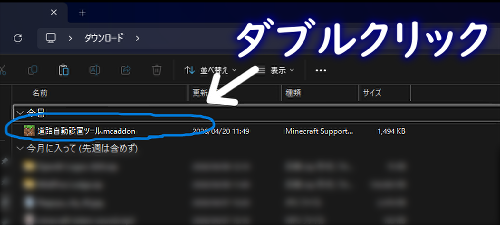
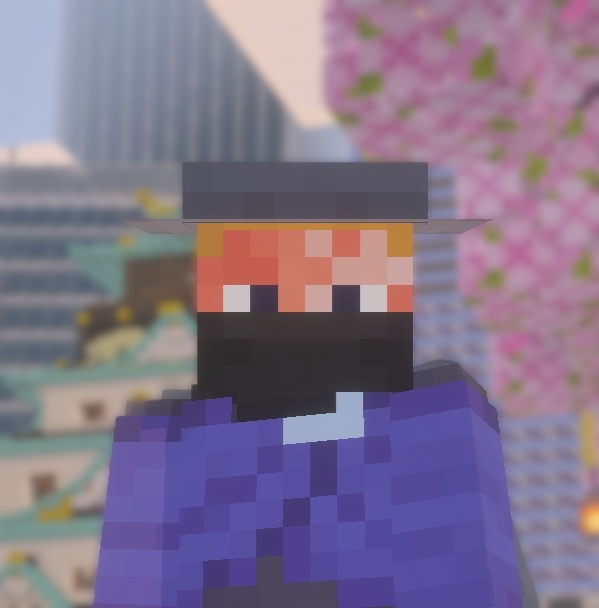
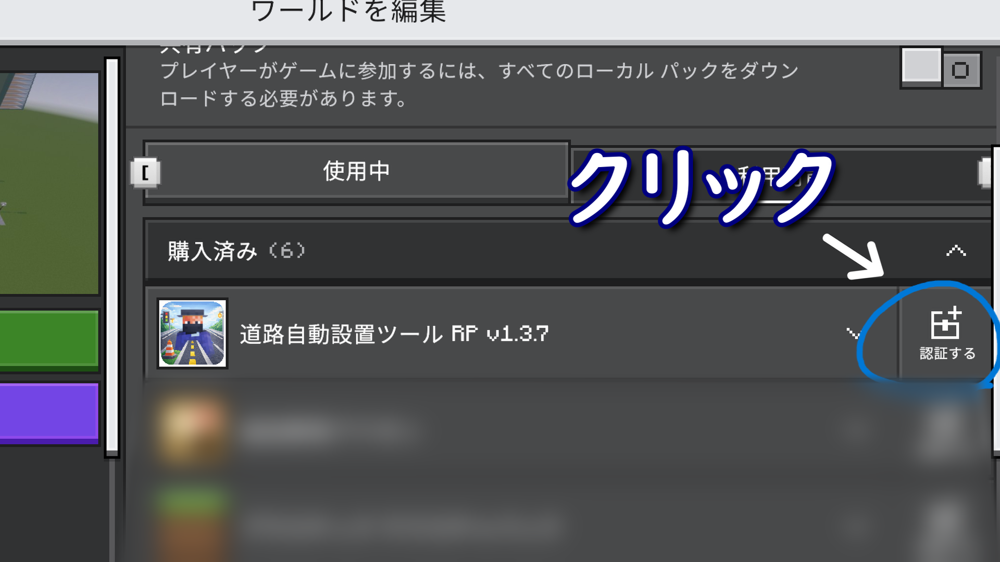
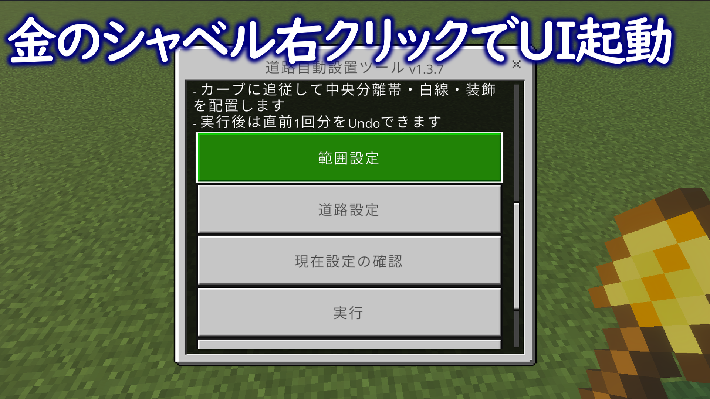

手順 1
ファイルを開いてMinecraftにインポート
ダウンロードしたファイルを開き、Minecraftにインポートします。

魔晄エネルギーゲーマー
Minecraft Bedrock Edition向けのアドオンです。
UIから設定し、道路を自動で整備できます。
バージョンによっては正常に動作しない場合があります。
導入しやすさを重視しています。
できるだけ破綻しにくいよう調整しています。
エラーや案内を確認しやすくしています。
幅や種類などを直感的に設定できます。
設定に応じて道路を自動で整備できます。
表示される案内を見ながら進められます。

ダウンロードしたファイルを開き、Minecraftにインポートします。

ワールドの設定から、リソースパックとビヘイビアーパックの場所に行き、ワールドに適用してください。

エラーや注意事項が出た場合は、コマンド欄の表示を確認してください。